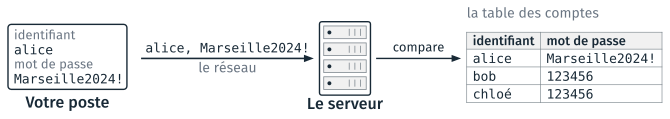
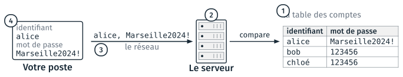
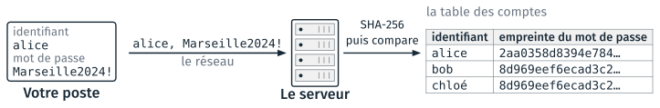
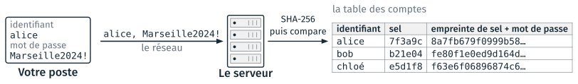
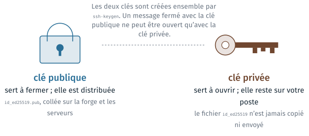
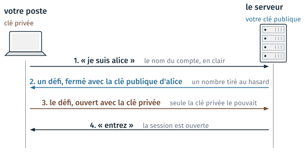

Prouver qui l’on est#
Cette partie part de la table des comptes d’un site, où le serveur garde les mots de passe, et décrit les quatre façons d’obtenir le mot de passe d’une autre personne. Elle présente ensuite une parade par façon : l’empreinte, avec un sel et un calcul lent ; un mot de passe long et tiré au hasard ; le chiffrement du trajet ; le deuxième facteur. Elle se termine par la paire de clés SSH, qui remplace le mot de passe pour une machine ou un programme. La partie n’a pas de TD : la paire de clés est créée et déclarée sur GitHub au cours 6.
La connexion à un site#
Un site garde chaque compte dans une table : l’identifiant et le mot de passe. À la connexion, le serveur compare le mot de passe reçu avec celui de la table.

La connexion à un site : le formulaire, le réseau, le serveur et sa table des comptes.#
La table est une base de données du serveur, avec une ligne par compte. L’identifiant est public ; le mot de passe est le seul secret.
Quatre façons d’obtenir un mot de passe#
Le mot de passe d’une personne se lit à trois endroits : dans la table du serveur, sur le réseau, sur son poste. Il peut aussi être deviné.

Les quatre endroits où le mot de passe d’une autre personne peut être obtenu.#
Façon |
Ce qui est fait |
|---|---|
|
une fuite de données du site |
|
essayer des mots de passe au formulaire |
|
lire le réseau s’il n’est pas chiffré |
|
hameçonnage, logiciel espion |
Selon Verizon (Data Breach Investigations Report 2025), 22 % des intrusions commencent par un identifiant et un mot de passe volés. Le site haveibeenpwned.com indique les fuites où figure une adresse de courriel.
Un mot de passe obtenu est ensuite essayé sur les autres sites, et 60 à 84 % des personnes interrogées réutilisent un mot de passe (Bitwarden, GoDaddy, 2025). Chaque façon a sa parade, présentée dans l’ordre des numéros dans la suite de la page : l’empreinte (1), la longueur et le hasard (2), le chiffrement (3), le deuxième facteur (4).
L’empreinte d’un contenu#
Une fonction de hachage calcule, pour chaque contenu, une empreinte de taille fixe. Pour savoir si deux contenus sont identiques, on compare leurs empreintes. SHA-256 (Secure Hash Algorithm) est une fonction de hachage courante ; son empreinte a 256 bits, écrits en 64 chiffres hexadécimaux. Voici les empreintes SHA-256 de deux mots :
bonjour 2cb4b1431b84ec15d35ed83bb927e27e8967d75f4bcd9cc4b25c8d879ae23e18
Bonjour 9172e8eec99f144f72eca9a568759580edadb2cfd154857f07e657569493bc44
Propriété de SHA-256 |
Sur l’exemple |
|---|---|
le même contenu donne toujours la même empreinte |
|
une lettre de différence donne une empreinte sans rapport |
|
l’empreinte a toujours 64 caractères |
pour un mot, pour un fichier de 1 Go |
aucun calcul ne retrouve le contenu à partir de l’empreinte |
|
Les empreintes servent ailleurs. L’identifiant d’un commit, vu au cours 2, est une empreinte SHA-1. Pour vérifier un fichier téléchargé, on compare son empreinte à celle publiée par le site ; sous Windows, la commande suivante la calcule :
certutil -hashfile fichier.zip SHA256
La table avec des empreintes#
Le serveur garde l’empreinte du mot de passe. À la connexion, il calcule l’empreinte du mot de passe reçu, et la compare à celle de la table.

La table des comptes, avec l’empreinte SHA-256 de chaque mot de passe.#
Une personne qui a volé cette table ne peut pas se connecter avec une empreinte :
Avec la table volée |
Résultat |
|---|---|
taper |
le serveur calcule l’empreinte de |
calculer l’empreinte de mots de passe candidats, et comparer |
le calcul se fait chez soi, sans limite d’essais : il s’agit de la devinette, façon 2 |
Le mot de passe voyage tel quel dans la connexion HTTPS, et le serveur calcule l’empreinte à l’arrivée. Si le navigateur envoyait l’empreinte, une empreinte volée permettrait de se connecter. Le guide de l’ANSSI sur l’authentification (PG-078, 2021, § 4.6) proscrit le stockage des mots de passe en clair : en cas de fuite, ils sont « directement révélés ».
Dans la table, bob et chloé ont la même empreinte, parce qu’ils ont le même mot de passe.
Le sel#
Sans sel, deux comptes qui ont le même mot de passe ont la même empreinte. Le serveur tire donc au hasard un sel pour chaque compte, et calcule l’empreinte du sel suivi du mot de passe.

La table des comptes, avec un sel par compte.#
Table volée, sels compris |
Sans sel |
Avec sel |
|---|---|---|
calculs pour essayer |
1, qui trouve bob et chloé |
3, un par compte |
liste publique d’empreintes déjà calculées |
donne |
ne sert pas : l’empreinte dépend du sel |
Le sel n’est pas secret : il est volé avec la table. Pour essayer 123456
sur le compte de bob, le voleur calcule l’empreinte de b21e04123456 ; sur
celui de chloé, l’empreinte de e5d1f8123456. Un calcul ne sert que pour un
compte. Une liste d’empreintes calculée à l’avance ne contient pas les sels ;
sans sel, chercher 8d969eef6ecad3c2 sur le web donne 123456. Sur deux
sites, le même mot de passe a deux empreintes différentes.
L’ANSSI (2021, § 4.6) demande un sel tiré au hasard pour chaque compte, de 128 bits au moins. Les sels de la figure sont raccourcis ; un vrai sel fait 16 octets.
Le calcul lent#
Avec le sel, le voleur peut encore essayer des mots de passe, compte par compte. Une fonction de hachage lente, comme bcrypt, réduit le nombre d’essais par seconde.
Fonction |
Essais par seconde |
Usage |
8 caractères tirés au hasard |
|---|---|---|---|
SHA-256 |
22 milliards |
vérifier un fichier, identifier un commit |
3,5 jours |
bcrypt (coût 5) |
184 000 |
garder un mot de passe : le calcul est lent exprès |
1 100 ans |
Les vitesses sont celles d’une carte graphique RTX 4090, mesurées avec hashcat 6.2.6 (Chick3nman, 2022). La dernière colonne divise le nombre de mots de passe de 8 caractères, 958 = 6,6 × 1015, par le nombre d’essais par seconde. L’ANSSI (2021, § 4.6) demande une fonction lente pour garder les mots de passe.
bcrypt et Argon2 répètent le calcul un grand nombre de fois ; le nombre de répétitions se règle par le coût. Le coût 10, courant, est 32 fois plus lent que le coût 5. Pour le site, un calcul par connexion reste imperceptible ; pour le voleur, chaque essai prend ce temps.
L’entropie d’un mot de passe#
L”entropie d’un mot de passe compte les choix faits au hasard pour le former, en bits. Un mot de passe de n bits d’entropie fait partie de 2n mots de passe possibles, et il faut autant d’essais pour les parcourir tous.
Le dessin n° 936 de xkcd, Password Strength (Randall Munroe, 2011, CC BY-NC 2.5), compare deux mots de passe :
Dans le dessin |
Le compte |
|---|---|
|
un mot peu courant (16 bits), une majuscule, des substitutions connues, un chiffre, un signe : 28 bits |
|
4 mots tirés au hasard parmi 2 048 : 4 × 11 = 44 bits |
Tr0ub4dor&3 a 11 caractères, mais il est formé d’un mot et de règles
connues : le dessin compte les choix de la personne. L’ANSSI (PG-078, p. 26)
précise que l’entropie calculée ne vaut que pour un tirage au hasard. Le
dessin suppose 1 000 essais par seconde, des essais au formulaire. Sur une
table d’empreintes bcrypt volée, à 1,6 million d’essais par seconde, la
vitesse retenue par la table de Hive Systems de 2026, 244 essais
prennent 4 mois.
L’entropie se calcule ainsi : L caractères tirés parmi N donnent L × log2 N bits, et k mots tirés parmi M donnent k × log2 M bits. 8 caractères tirés parmi 95 font 53 bits ; 7 mots tirés parmi 7 776 font 90 bits.
Organisme |
Seuil |
|---|---|
CNIL, délibération 2022-100 |
80 bits si le mot de passe est seul, soit 12 caractères de quatre classes, 14 de trois, ou 7 mots tirés au hasard ; 50 bits si les essais sont limités ; 13 bits avec un matériel, comme une carte bancaire |
ANSSI, PG-078, tableau 3 |
65 bits pour 9 à 11 caractères, 85 pour 12 à 14, 100 pour 15 et plus |
NIST, SP 800-63B-4 (2025) |
15 caractères au moins si le mot de passe est seul |
Combien de temps pour le deviner#
Avec une table d’empreintes volée, le voleur essaie les mots de passe dans l’ordre le plus probable. Le tableau donne les temps de Hive Systems (table 2026), pour des empreintes bcrypt de coût 10 et seize cartes graphiques RTX 5090. Au formulaire, le serveur limite les essais : ces temps sont ceux d’une table volée.
Mot de passe |
Comment il est trouvé |
Entropie |
Temps |
|---|---|---|---|
|
il est dans les listes de fuites |
0 bit |
instantané |
|
un nom de ville, une année, un signe à la fin : des règles connues des programmes |
≈ 30 bits |
secondes à heures |
|
toutes les combinaisons : 958 |
53 bits |
132 ans |
|
toutes les combinaisons : 7 7767 |
90 bits |
hors de portée |
Les programmes de devinette essaient d’abord les listes de fuites, puis les mots du dictionnaire avec un chiffre et un signe aux positions habituelles. Les formulaires qui imposent une majuscule, un chiffre et un signe produisent des mots de passe comme celui de la deuxième ligne.
Les entropies des deux premières lignes sont des estimations. 123456 est le
premier essai de toute liste. Marseille2024! se compose d’une ville
(environ 15 bits), d’une année (environ 7 bits), d’une majuscule et d’un signe
aux positions habituelles ; 30 bits, à 1,6 million d’essais par seconde, se
parcourent en une dizaine de minutes.
Pour un mot de passe tiré au hasard, la longueur détermine le temps de calcul ; les classes de caractères comptent peu. Un mot de passe trouvé est essayé sur les autres sites : il faut donc un mot de passe différent par site.
Hameçonnage#
Dans l”hameçonnage, quatrième façon, le mot de passe est donné par son propriétaire, sur une page qui imite le site. La page arrive en général par un courriel. Le message suivant a été construit pour le cours ; son domaine n’existe pas.
De : Service informatique <support@securite-compte.net>
Objet : Votre compte sera suspendu dans 24 h
Bonjour,
Suite à une mise à jour de nos systèmes, vous devez confirmer votre
identité sous 24 heures, faute de quoi votre accès sera suspendu.
https://ecole.fr/compte
(le lien pointe vers http://ecole-fr.verif-compte.net/…)
Merci de votre compréhension.
Pièce jointe : Formulaire.pdf.exe
Élément |
À lire |
|---|---|
l’expéditeur |
le domaine de l’adresse, |
l’objet |
l’urgence et la menace |
le lien |
le domaine réel du lien, affiché en le survolant, diffère de celui affiché dans le texte |
la pièce jointe |
un fichier exécutable, |
Le nom de domaine d’une adresse se lit avant le premier / qui suit
http:// ou https://, en partant de la droite, jusqu’au deuxième point :
ecole-fr.verif-compte.net est un sous-domaine de verif-compte.net.
En cas de doute, on ne clique pas ; on va sur le site par son adresse habituelle, et on contacte le service par un autre moyen. Un service informatique ne demande pas de mot de passe par courriel.
Une parade par menace#
Le tableau reprend les quatre façons, avec la parade de chacune.
Menace |
Parade |
Ce que cela demande |
|---|---|---|
|
l’empreinte, avec un sel et un calcul lent |
rien de votre part : le site s’en charge |
|
long, tiré au hasard, différent sur chaque site |
un gestionnaire de mots de passe, qui tire au hasard et retient |
|
le chiffrement du trajet |
HTTPS, SSH, WPA sur le Wi-Fi ; déjà en place presque partout |
|
un deuxième facteur |
un téléphone, ou une clé physique |
Le mot de passe de la messagerie est à protéger en premier : il permet de réinitialiser tous les autres.
Un gestionnaire de mots de passe tire au hasard un mot de passe par site et les garde. On retient un seul mot de passe, celui du gestionnaire : une phrase de sept mots, utilisée nulle part ailleurs. Le gestionnaire du navigateur ou du téléphone convient pour commencer ; KeePassXC et Bitwarden sont les deux gestionnaires libres courants.
La CNIL (2022) et le NIST ne recommandent plus de changer de mot de passe à
intervalles réguliers : cette règle produit Marseille2024!, puis
Marseille2025!. On change un mot de passe quand il a fui.
Le deuxième facteur#
Il existe trois sortes de preuves d’identité, appelées facteurs :
Facteur |
Terme de l’ANSSI |
Exemples |
|---|---|---|
ce que je sais |
facteur de connaissance |
un mot de passe |
ce que je possède |
facteur de possession |
un téléphone, une clé physique |
ce que je suis |
facteur inhérent (la biométrie) |
une empreinte digitale, un visage |
Un deuxième facteur ajoute au mot de passe une preuve d’une autre sorte. Un mot de passe et une question secrète sont deux facteurs de connaissance : un même hameçonnage obtient les deux.
Forme |
Comment |
Limite |
|---|---|---|
code par SMS |
un code reçu par message |
détournable en faisant transférer le numéro |
application à codes |
un code changé toutes les 30 s |
le code se donne sur une page d’hameçonnage |
clé physique, passkey |
l’appareil vérifie l’adresse du site |
résiste aux deux |
Selon Microsoft (2023), un deuxième facteur réduit de 99,2 % le nombre de comptes compromis, et de 98,6 % même quand le mot de passe a fui. Les trois facteurs sont ceux de l’ANSSI (PG-078, 2021).
GitHub impose un deuxième facteur depuis 2023. On l’active au cours 6, à la création du compte, avec une application à codes, et on garde les codes de secours : sans eux, la perte du téléphone fait perdre le compte.
Une passkey est une paire de clés gardée par le téléphone ou l’ordinateur, qui remplace le mot de passe. Elle repose sur le principe de la clé SSH, présentée dans la section suivante.
Une clé à la place du mot de passe#
Pour une machine ou un programme, une paire de clés remplace le mot de passe. Rien n’est tapé, et le serveur ne garde rien de secret.

La clé publique et la clé privée d’une paire.#
La clé publique se distribue : on la colle sur la forge et sur les serveurs. La clé privée reste sur le poste. La clé privée ne se calcule pas à partir de la clé publique ; le calcul, de l’arithmétique sur de grands nombres, est hors programme.
La paire de clés répond aux quatre façons d’obtenir un mot de passe. Le serveur ne garde que la clé publique, inutile seule. Une clé de 256 bits ne se devine pas. Rien de secret ne passe sur le réseau. Rien n’est tapé, donc rien ne peut être obtenu par hameçonnage.
La même paire sert pour la forge
(git clone git@github.com:alice/projet.git), pour un serveur de calcul
(ssh alice@calcul.ecole.fr), pour la copie de fichiers (scp) et pour VS
Code à distance (Remote – SSH). On crée une paire par poste. Les forges
acceptent aussi HTTPS avec un jeton, qui est un autre secret à garder.
La connexion SSH#
À la connexion, le serveur vérifie que le poste détient la clé privée, sans la recevoir.

Les quatre messages d’une connexion SSH.#
Le défi est un nombre tiré au hasard. Le renvoyer ouvert prouve que le poste détient la clé privée. Un défi ne sert qu’une fois : l’intercepter ne donne rien. Toute la session est ensuite chiffrée. SSH signifie Secure Shell : un terminal à distance.
Les deux fichiers de la paire#
La commande ssh-keygen crée la paire de clés et écrit les deux fichiers
dans le dossier .ssh du dossier personnel. Sa sortie, sous Windows avec
OpenSSH 9.6, sans les deux questions sur la phrase de passe :
> ssh-keygen -t ed25519 -C "alice.martin@etu.ecole.fr"
Enter file in which to save the key (C:\Users\alice\.ssh\id_ed25519):
Your identification has been saved in C:\Users\alice\.ssh\id_ed25519
Your public key has been saved in C:\Users\alice\.ssh\id_ed25519.pub
The key fingerprint is:
SHA256:UdftFYrZHMVT1F9jJrEyd+9auv49Mi15wkj7o+uNUm4 alice.martin@etu.ecole.fr
L’option -t ed25519 choisit le type de clé courant. L’option -C ajoute
un commentaire qui étiquette la clé, ici une adresse. SHA256:Udft… est
l’empreinte de la clé publique.
Fichier |
Taille |
Contenu |
|---|---|---|
|
419 octets |
la clé privée, lisible par vous seul ; ne jamais l’ouvrir ni la copier |
|
107 octets |
la clé publique, une seule ligne :
|
ssh-keygen pose trois questions : l’emplacement des fichiers, puis la
phrase de passe, deux fois. En salle, on répond aux trois par Entrée :
l’emplacement par défaut, sans phrase de passe. La phrase de passe
chiffre la clé privée sur le disque, et la protège en cas de vol du poste.
Elle est recommandée sur un portable personnel ; en salle, on s’en passe pour
ne pas la retaper à chaque push.
TD de la séance#
Les TD de la séance sont dans Travaux dirigés de la séance 5.